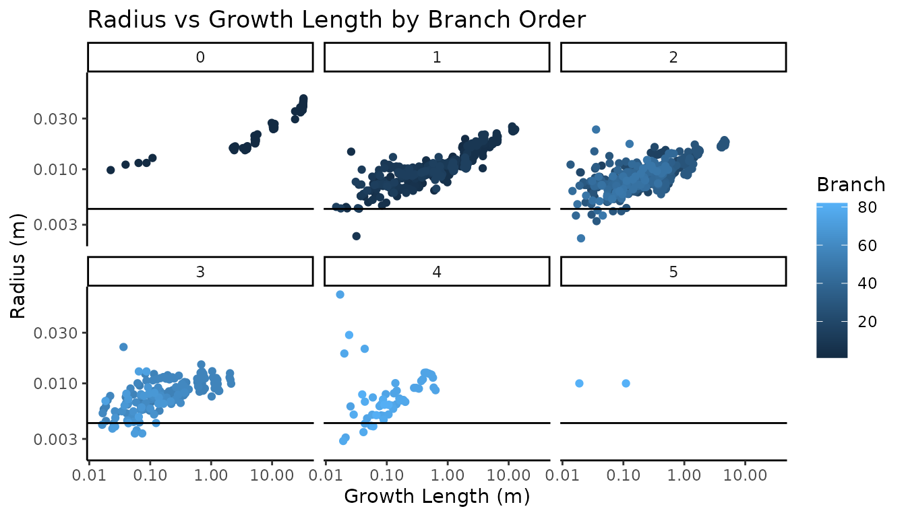

Background
Real Twig was designed and tested using QSMs created with the TreeQSM modeling software. If high quality point clouds, QSMs with the proper input settings, and species specific twig diameter measurements are supplied, you can expect to get very good estimates of tree volume within ± 10% of the real tree volume.
While Real Twig can provide excellent tree volume estimates, it can not transform poor quality data into good data. As a general rule of thumb, the closer the QSM resembles the actual tree before correction, the better the results will be after correction. Real Twig performs best when the topology of the tree is mostly correct, and only the cylinder sizes are the main sources of QSM error. Errors in QSM topology become readily apparent after correction, so Real Twig can also be used to visually validate QSM topology without reference data.
Installation
You can install the package directly from CRAN:
install.packages("rTwig")Or the latest development version from GitHub:
devtools::install_github("https://github.com/aidanmorales/rTwig")Load Packages
The first step is to load the rTwig package. Real Twig works well when paired with packages from the Tidyverse, so we will also load the dplyr package to help with data manipulation.
Import QSM
rTwig supports all available versions of TreeQSM, from v2.0 to v2.4.1 at the time of writing. It is important to note that legacy versions of TreeQSM (v2.0) store data in a much different format than modern versions (v2.3.0-2.4.1). It is strongly advised to use the latest version of TreeQSM with rTwig for the best QSM topology and volume estimates. Older versions can be used, but the QSM topology is poor, and volume underestimation is almost guaranteed.
Regardless of the version of TreeQSM or MATLAB used, the
import_qsm() function will import a QSM (.mat extension)
and convert the data to a format usable by R. The user must specify
which version of TreeQSM they are using with the version
parameter. rTwig automatically defaults to use the new TreeQSM format,
so the older format can be imported with version = "2.0".
import_qsm() also imports all QSM information, including
cylinder, branch, treedata, rundata, pmdistance, and triangulation data,
which are stored together as a list.
TreeQSM v2.3.0 - 2.4.1
We can import a QSM by supplying the import_qsm()
function the directory to our QSM.
# QSM directory
file <- system.file("extdata/QSM.mat", package = "rTwig")
# Import and save QSM
qsm <- import_qsm(file)The QSM should be a list with a length of six. We can check it as follows:
summary(qsm)
#> Length Class Mode
#> cylinder 17 data.frame list
#> branch 10 data.frame list
#> treedata 91 -none- list
#> rundata 45 data.frame list
#> pmdistance 21 -none- list
#> triangulation 12 -none- listLet’s check what version of TreeQSM was used, the date the QSM was made, and take a look at the cylinder data.
# QSM info
qsm$rundata$version
#> [1] "2.4.1"
qsm$rundata$start.date
#> [1] "2023-12-06 10:14:31 UTC"
# Number of cylinders
str(qsm$cylinder)
#> 'data.frame': 1136 obs. of 17 variables:
#> $ radius : num 0.0465 0.0454 0.0442 0.0437 0.0429 ...
#> $ length : num 0.09392 0.07216 0.06654 0.00938 0.06795 ...
#> $ start.x : num 0.768 0.768 0.768 0.769 0.769 ...
#> $ start.y : num -16.4 -16.4 -16.4 -16.3 -16.3 ...
#> $ start.z : num 254 254 254 254 254 ...
#> $ axis.x : num 0.00995 -0.0111 0.01364 0.01571 0.01449 ...
#> $ axis.y : num 0.0912 0.0391 0.0367 0.0271 0.0267 ...
#> $ axis.z : num 0.996 0.999 0.999 1 1 ...
#> $ parent : int 0 1 2 3 4 5 6 7 8 9 ...
#> $ extension : int 2 3 4 5 6 7 8 9 10 11 ...
#> $ added : num 0 0 0 0 0 0 0 0 0 0 ...
#> $ UnmodRadius : num 0.0465 0.0454 0.0442 0.0437 0.0429 ...
#> $ branch : int 1 1 1 1 1 1 1 1 1 1 ...
#> $ SurfCov : num 0.875 1 1 1 1 1 1 1 1 1 ...
#> $ mad : num 0.00072 0.000538 0.000523 0.000335 0.000438 ...
#> $ BranchOrder : int 0 0 0 0 0 0 0 0 0 0 ...
#> $ PositionInBranch: int 1 2 3 4 5 6 7 8 9 10 ...TreeQSM v2.0
Let’s try importing an old QSM and check its structure.
# QSM Directory
file <- system.file("extdata/QSM_2.mat", package = "rTwig")
# Import and save QSM
qsm2 <- import_qsm(file, version = "2.0")
# QSM Info
summary(qsm2)
#> Length Class Mode
#> cylinder 15 data.frame list
#> treedata 33 -none- list
str(qsm2$cylinder)
#> 'data.frame': 1026 obs. of 15 variables:
#> $ radius : num 0.0612 0.056 0.0553 0.0552 0.0534 ...
#> $ length : num 0.335 0.283 0.272 0.244 0.267 ...
#> $ start.x : num 8.4 8.43 8.44 8.47 8.5 ...
#> $ start.y : num 47.7 47.7 47.7 47.8 47.8 ...
#> $ start.z : num 2.23 2.57 2.85 3.12 3.36 ...
#> $ axis.x : num 0.1103 0.0531 0.0878 0.1666 0.0894 ...
#> $ axis.y : num 0.0337 0.0296 0.1282 0.0801 0.061 ...
#> $ axis.z : num 0.993 0.998 0.988 0.983 0.994 ...
#> $ parent : num 0 1 2 3 4 5 6 7 8 9 ...
#> $ extension : num 1 2 3 4 5 6 7 8 9 10 ...
#> $ added : int 0 0 0 0 0 0 0 0 0 0 ...
#> $ UnmodRadius : num 0.0612 0.056 0.0553 0.0552 0.0534 ...
#> $ branch : num 1 1 1 1 1 1 1 1 1 1 ...
#> $ BranchOrder : num 0 0 0 0 0 0 0 0 0 0 ...
#> $ PositionInBranch: num 1 2 3 4 5 6 7 8 9 10 ...Cylinder Data
Next, we have to update the parent-child ordering in the cylinder data to allow for path analysis and add some new QSM variables. The most important QSM variable is growth length. Growth length is a cumulative length metric, where the growth length of a cylinder is its length, plus the lengths of all of its children. This gives us perfect ordering along a branch or a path, where the highest growth length is equal to the base of the tree, and twigs have a growth length equal to their cylinder length. It is also important to note that the number of twigs in a QSM is always equal to the number of paths in a QSM, since a path goes from the base of the tree to a twig tip. The reverse branch order (RBO) is another important variable. The RBO assigns an order of 1 to the twigs, and works backwards to the base of the main stem, which has the highest RBO. This makes problematic twig cylinders easy to identify. Let’s save the cylinders to a new variable to make it easier to work with, check to make sure the parent-child ordering is sequential without any gaps, and look at the new variables.
# Save cylinders to new object
cylinder <- qsm$cylinder
# Update cylinder data
cylinder <- update_cylinders(cylinder)
# Check ordering
cylinder %>%
select(branch, parent, extension, PositionInBranch) %>%
head()
#> # A tidytable: 6 × 4
#> branch parent extension PositionInBranch
#> <int> <dbl> <int> <int>
#> 1 1 0 1 1
#> 2 1 1 2 2
#> 3 1 2 3 3
#> 4 1 3 4 4
#> 5 1 4 5 5
#> 6 1 5 6 6
# Check New Variables
cylinder %>%
select(reverseBranchOrder, totalChildren, GrowthLength, segment, parentSegment) %>%
head()
#> # A tidytable: 6 × 5
#> reverseBranchOrder totalChildren GrowthLength segment parentSegment
#> <dbl> <int> <dbl> <int> <int>
#> 1 20 1 32.8 1 0
#> 2 20 1 32.7 1 0
#> 3 20 1 32.6 1 0
#> 4 20 1 32.6 1 0
#> 5 20 1 32.6 1 0
#> 6 20 1 32.5 1 0Topology
Before we correct the QSM, it is often worthwhile to check the
quality of the QSM by plotting it against its input point cloud. To do
this, we load the point cloud and save it as a data frame, with the
first three columns as the x, y, and z columns. We use the
plot_qsm() function to do this. We want to check the raw
cylinder fits before TreeQSM modified them with its taper filter, so we
will will use the raw cylinder radii.
# Load the input point cloud
file <- system.file("extdata/cloud.txt", package = "rTwig")
cloud <- read.table(file, header = FALSE)
# Plot the qsm and point cloud
plot_qsm(cylinder = cylinder, cloud = cloud, radius = cylinder$UnmodRadius)Twig Diameters
Before we can correct the QSM radii, we need to know what our real
twig diameter is. For this example tree, the species is a Kentucky
coffee tree (Gymnocladus dioicus), which has nice, stout twigs.
rTwig comes with a data base of twigs that can be called by typing in
the twigs data set. The data set includes the average twig
radius, the min and max radius, the standard deviation, and the
coefficient of variation. Let’s look at the twig data set and find the
twig diameter for Kentucky coffee tree.
# Look at the twigs database
twigs
#> # A tibble: 96 × 7
#> scientific.name radius.mm n min max std cv
#> <chr> <dbl> <dbl> <dbl> <dbl> <dbl> <dbl>
#> 1 Abies concolor 1.43 21 0.89 1.9 0.28 0.19
#> 2 Abies spp. 1.43 21 0.89 1.9 0.28 0.19
#> 3 Acer platanoides 1.39 30 0.89 2.03 0.3 0.21
#> 4 Acer rubrum 1.18 30 0.89 1.52 0.16 0.14
#> 5 Acer saccharinum 1.41 14 0.89 1.9 0.27 0.2
#> 6 Acer saccharum 1.2 30 0.89 1.65 0.23 0.19
#> 7 Acer spp. 1.29 104 0.89 2.03 0.23 0.18
#> 8 Aesculus flava 2.67 8 2.29 2.79 0.2 0.08
#> 9 Aesculus spp. 2.67 8 2.29 2.79 0.2 0.08
#> 10 Betula nigra 0.85 30 0.51 1.52 0.23 0.27
#> # ℹ 86 more rows
# Find our species
filter(twigs, scientific.name == "Gymnocladus dioicus")
#> # A tibble: 1 × 7
#> scientific.name radius.mm n min max std cv
#> <chr> <dbl> <dbl> <dbl> <dbl> <dbl> <dbl>
#> 1 Gymnocladus dioicus 4.23 30 2.79 6.6 0.87 0.2Summary Metrics
Before we correct the QSM, Let’s take a look at the current metrics,
so we can compare the tree volume before and after correction. We can do
this with the qsm_summary() function. If stem triangulation
was enabled in TreeQSM, we can use it to better represent the main stem
volume in some cases, especially when there are large butress flares. We
can also make a plot of the radius versus the growth length to see how
much overestimation there is in the twig radii.
# QSM summary
qsm_summary(cylinder, radius = "unmodified")
#> [[1]]
#> # A tidytable: 6 × 3
#> BranchOrder Tot.vol.L Tot.sa.m2
#> <int> <dbl> <dbl>
#> 1 0 10.8 0.644
#> 2 1 5.80 0.827
#> 3 2 3.86 0.732
#> 4 3 1.06 0.237
#> 5 4 0.622 0.0785
#> 6 5 0.0346 0.00693
#>
#> [[2]]
#> # A tidytable: 1 × 8
#> QSM.dbh.cm QSM.ht.m Stem.vol.L Branch.vol.L Tot.vol.L Stem.sa.m2 Branch.sa.m2
#> <dbl> <dbl> <dbl> <dbl> <dbl> <dbl> <dbl>
#> 1 7.18 3.69 10.8 11.4 22.2 0.644 1.88
#> # ℹ 1 more variable: Tot.sa.m2 <dbl>
# QSM summary with Triangulation
qsm_summary(cylinder = cylinder, triangulation = qsm$triangulation, radius = "unmodified")
#> [[1]]
#> # A tidytable: 6 × 3
#> BranchOrder Tot.vol.L Tot.sa.m2
#> <int> <dbl> <dbl>
#> 1 0 29.0 0.645
#> 2 1 5.80 0.827
#> 3 2 3.86 0.732
#> 4 3 1.06 0.237
#> 5 4 0.622 0.0785
#> 6 5 0.0346 0.00693
#>
#> [[2]]
#> # A tidytable: 1 × 8
#> QSM.dbh.cm QSM.ht.m Stem.vol.L Branch.vol.L Tot.vol.L Stem.sa.m2 Branch.sa.m2
#> <dbl> <dbl> <dbl> <dbl> <dbl> <dbl> <dbl>
#> 1 7.18 3.69 29.0 11.4 40.4 0.645 1.88
#> # ℹ 1 more variable: Tot.sa.m2 <dbl>
Looking at the diagnostic plot on a log log scale, with the measured twig radius as the horizontal line, we can see that nearly all of the twig radii are overestimated, with increasing radii variation as the growth length approaches zero. Except for the main stem, there is not a very clear pattern in the individual branch tapering.
Correct Radii
Now we can correct our QSM cylinder radii with the
correct_radii() function. In this step, we model each path
in the tree separately, where poorly fit cylinders are identified and
removed, and a GAM is fit, where the intercept is the measured twig
radius, and the growth length predicts the cylinder radius. Let’s
correct the cylinder radii on our Kentucky coffee tree and look at the
new volume estimates and diagnostic plots.
# Correct cylinder radii
cylinder <- correct_radii(cylinder, twigRad = 4.23)
# Corrected QSM summary
qsm_summary(cylinder, radius = "modified")
#> [[1]]
#> # A tidytable: 6 × 3
#> BranchOrder Tot.vol.L Tot.sa.m2
#> <int> <dbl> <dbl>
#> 1 0 10.8 0.640
#> 2 1 5.20 0.753
#> 3 2 2.69 0.583
#> 4 3 0.539 0.170
#> 5 4 0.104 0.0431
#> 6 5 0.00683 0.00308
#>
#> [[2]]
#> # A tidytable: 1 × 8
#> QSM.dbh.cm QSM.ht.m Stem.vol.L Branch.vol.L Tot.vol.L Stem.sa.m2 Branch.sa.m2
#> <dbl> <dbl> <dbl> <dbl> <dbl> <dbl> <dbl>
#> 1 7.18 3.69 10.8 8.53 19.3 0.640 1.55
#> # ℹ 1 more variable: Tot.sa.m2 <dbl>
Here we can see that we reduced the volume of the QSM by around 3 liters, which is around a 15% overestimation in volume before correction. Kentucky coffee tree has relatively large twigs, so the overestimation is not as severe as a tree with much smaller twigs, that can have upwards of >200% overestimation in some cases.
Looking at the diagnostic plot, we can see that individual branches can clearly be identified by their unique allometry. Notice how nearly all of the volume reduction occurred in the higher order branches, with the main stem remaining nearly unchanged. The branches now taper towards the measured twig radius for Kentucky coffee tree. Getting the real twig diameter is critical, as too high a value will overestimate volume, and too low a value will underestimate total volume, with the over or underestimate being proportional to the number of twigs and small branches in the tree. If your species is not available in the database, we have found that the genus level twig radius average is a good substitute.
Visualization
Optionally, we can smooth our QSM by ensuring all of the cylinders
are connected. This is a visual change and does not affect the volume
estimates. We can do this with the smooth_qsm() function,
and plot the results with the plot_qsm() function. The
different colors are the different branch orders. We can also color our
QSM by many different variables and palettes. See the
plot_qsm() documentation for more details.
# Smooth QSM
cylinder <- smooth_qsm(cylinder)
# Plot QSM
plot_qsm(cylinder)
# QSM Custom Colors & Piping
cylinder %>%
plot_qsm(
radius = .$radius,
cyl_color = .$reverseBranchOrder,
cyl_palette = "magma"
)
# Plot Twigs Colored by Unique Segment
cylinder %>%
filter(reverseBranchOrder == 1) %>%
plot_qsm(
radius = .$radius,
cyl_color = .$reverseBranchOrder,
cyl_palette = "rainbow"
)We can also save our QSM as a mesh (.ply extension) for use in other
modeling programs with the export_mesh() function. The same
colors and palettes found in the plot_qsm() function can be
used to color the mesh.
# Export Mesh Colored by RBO
cylinder %>%
export_mest(
filename = "QSM_mesh",
radius = .$radius,
cyl_color = .$reverseBranchOrder,
cyl_palette = "magma"
)
# Export Twigs Colored by Unique Segments
cylinder %>%
filter(reverseBranchOrder == 1) %>%
export_mesh(
filename = "QSM_mesh",
radius = .$radius,
cyl_color = .$reverseBranchOrder,
cyl_palette = "rainbow"
)Workflow & Best Practices
Below is an overview of the typical rTwig processing chain. When dealing with multiple trees, we advise creating a master data frame in a tidy format, where each unique tree is a row, and the columns are the tree id, the directory to the QSM .mat file, and the species twig diameter, all of which can be tailored to your workflow needs. Then it is a simple matter of looping over the master data frame, correcting each tree, and saving the results to a master list. Make sure to read each function’s documentation for more examples and unique features.
# Import QSM
file <- system.file("extdata/QSM.mat", package = "rTwig")
qsm <- import_qsm(file)
# Real Twig Main Steps
cylinder <- qsm$cylinder
cylinder <- update_cylinders(cylinder)
cylinder <- correct_radii(cylinder, twigRad = 4.23)
# Summary Metrics
qsm_summary(cylinder)
# Plot Results
plot_qsm(cylinder)Validation
How do we know if Real Twig returns accurate volume estimates? We rigorously tested our method against a high quality reference data set that were both laser scanner and destructively sampled. The laser scanning was done in leaf-off conditions with a Riegl VZ-400. The destructive sampling contains total branch and main stem dry mass, and also basic density for both the main stem and the branches. We used different versions of TreeQSM with the same input parameters per tree to test our model.
TreeQSM v2.4.1
Below are the mass estimates and statistics using TreeQSM v2.4.1 with its built in tapering and Real Twig applied to the same QSMs.
#> Warning: The `scale_name` argument of `continuous_scale()` is deprecated as of ggplot2
#> 3.5.0.
#> This warning is displayed once every 8 hours.
#> Call `lifecycle::last_lifecycle_warnings()` to see where this warning was
#> generated.
#> Warning: The `trans` argument of `continuous_scale()` is deprecated as of ggplot2 3.5.0.
#> ℹ Please use the `transform` argument instead.
#> This warning is displayed once every 8 hours.
#> Call `lifecycle::last_lifecycle_warnings()` to see where this warning was
#> generated.| TreeQSM v2.4.1 | |||
| Metric | Total Woody AGB | Main Stem Biomass | Branch Biomass |
|---|---|---|---|
| Mean Relative Error (%) | 126.428 | 4.581 | 949.317 |
| RMSE (kg) | 325.973 | 22.217 | 317.471 |
| Relative RMSE (%) | 77.672 | 6.773 | 346.454 |
| CCC | 0.831 | 0.998 | 0.381 |
| Real Twig (TreeQSM v2.4.1) | |||
| Metric | Total Woody AGB | Main Stem Biomass | Branch Biomass |
|---|---|---|---|
| Mean Relative Error (%) | 0.019 | 0.493 | -0.691 |
| RMSE (kg) | 27.187 | 23.653 | 7.736 |
| Relative RMSE (%) | 6.478 | 7.210 | 8.442 |
| CCC | 0.998 | 0.997 | 0.997 |
TreeQSM v2.3.0
Below are the mass estimates and statistics using TreeQSM v2.3.0 with its built in tapering and Real Twig applied to the same QSMs.
| TreeQSM v2.3.0 | |||
| Metric | Total Woody AGB | Main Stem Biomass | Branch Biomass |
|---|---|---|---|
| Mean Relative Error (%) | 50.529 | 1.204 | 363.772 |
| RMSE (kg) | 156.127 | 23.138 | 146.843 |
| Relative RMSE (%) | 37.202 | 7.053 | 160.249 |
| CCC | 0.947 | 0.997 | 0.654 |
| Real Twig (TreeQSM v2.3.0) | |||
| Metric | Total Woody AGB | Main Stem Biomass | Branch Biomass |
|---|---|---|---|
| Mean Relative Error (%) | 2.198 | 4.700 | -9.095 |
| RMSE (kg) | 24.101 | 22.747 | 15.081 |
| Relative RMSE (%) | 5.743 | 6.934 | 16.457 |
| CCC | 0.998 | 0.997 | 0.989 |